Приложения и SaaS
Полноценные продукты с рабочей начинкой — логика, данные и AI внутри. Веб и мобильные, с оплатой, подписками и личным кабинетом. Не «сайт с формой», а система.
Одна платформа для всего события — от задач до гостей, на пяти поверхностях
Подготовка свадьбы или корпоратива — это зоопарк из Excel, чатов, форм и Word, где версии расходятся, а дедлайны теряются. Planoria собирает задачи, бюджет, гостей, тайминг, чат и AI-ассистента в один контур и синхронно раздаёт их по вебу, Android-приложению, Telegram-боту, российскому MAX и гостевому порталу.
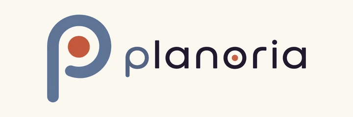
Свой бренд и дизайн-система
Собственный знак и визуальный язык, парные анимированные маскоты и единый стиль на всех пяти поверхностях. Не набор экранов, а цельный продукт с лицом.
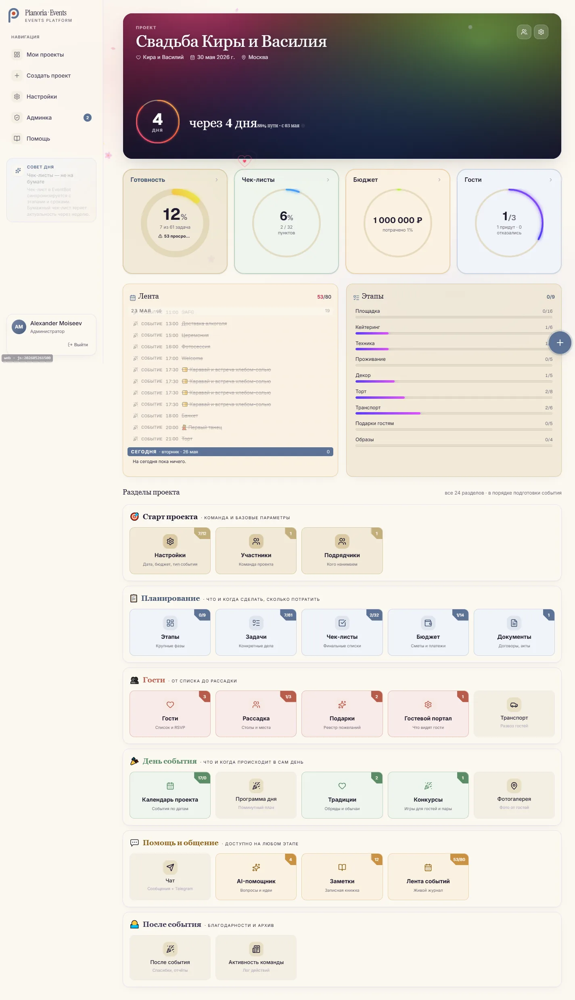
Дашборд проекта: обратный отсчёт до события, прогресс этапов, ближайшие задачи, бюджет и гости — одна картина, которую видят и пара, и команда.
Подготовка события — зоопарк инструментов
Задачи в Excel без общего доступа, бюджет в отдельном файле, гости в Google-форме, RSVP — звонками, программа дня в Word, фото вразнобой. Версии расходятся, а организатор пяти свадеб тонет в личке.
Одна модель данных — пять синхронных поверхностей
Веб, Android-приложение, Telegram-бот, MAX и гостевой портал читают и пишут одни данные. Внутри — задачи с ролями и напоминаниями, бюджет с подрядчиками, гости с импортом и рассадкой, чат с зеркалом в мессенджеры, AI-ассистент на RAG.
Один проект — одна правда
Гости подтверждают приход сами, без обзвона; бюджет пересчитывается на лету; напоминания приходят в мессенджер и push. Рутина уходит в систему — событие готовится без хаоса.
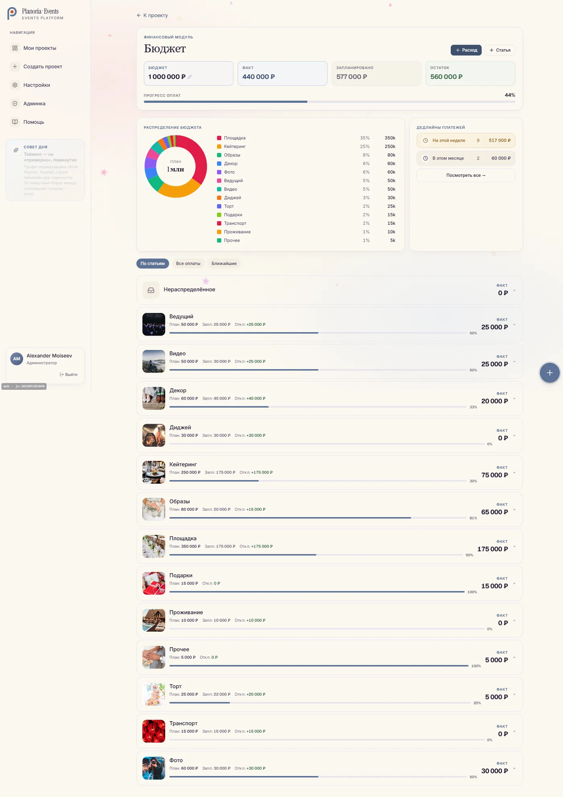
Бюджет и платежи: статьи, подрядчики, процент исполнения, донат-диаграмма, защита от переплаты.
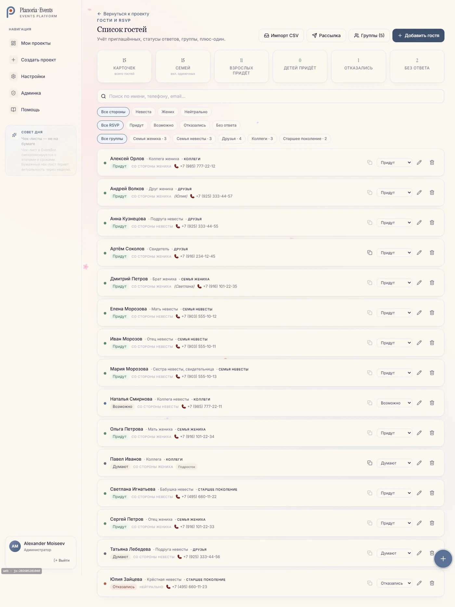
Гости и RSVP: группировка по семьям, импорт CSV с дедупом, три статуса, сегментированные рассылки.
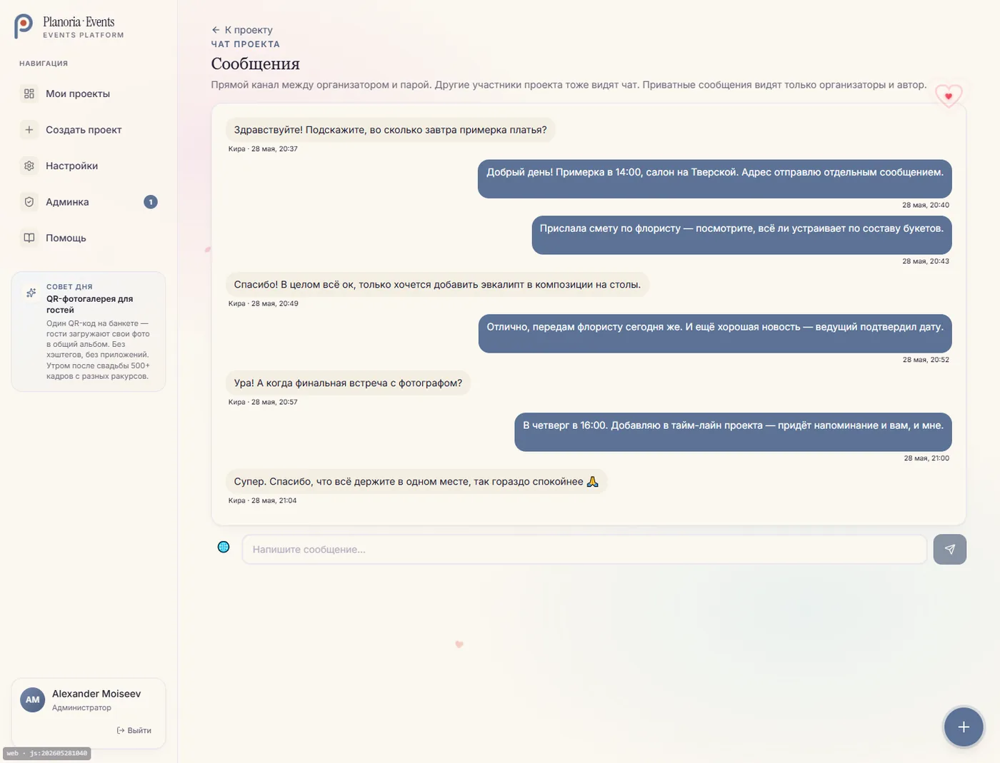
Чат проекта с двусторонним зеркалом в Telegram и MAX — пишешь в мессенджере, появляется в приложении.
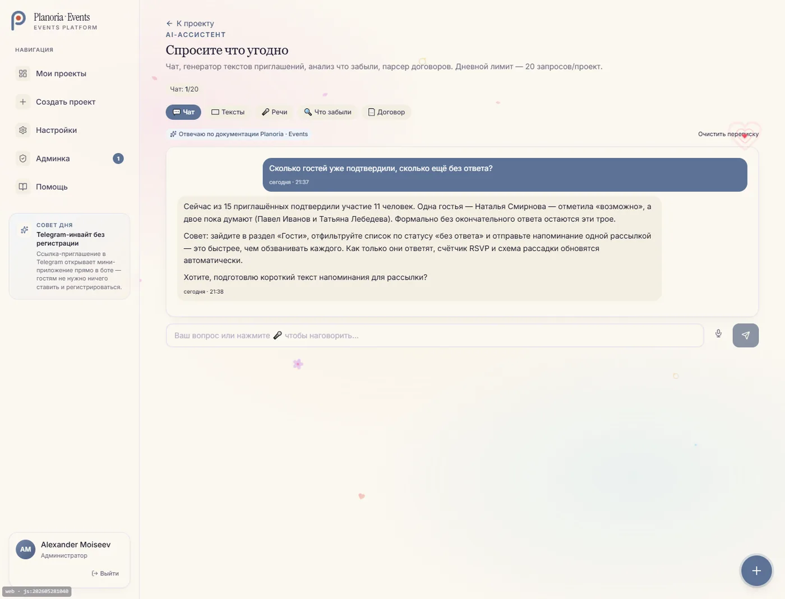
AI-ассистент на RAG: отвечает строго по данным проекта, с историей переписки и ссылками на разделы.
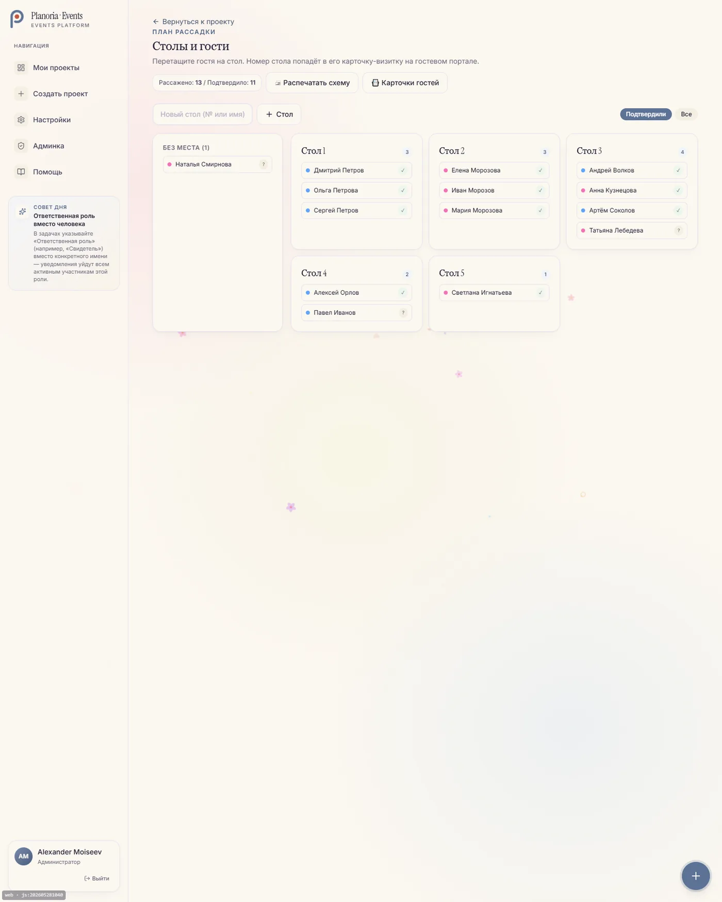
Рассадка гостей по столам drag-and-drop — отдельный модуль.
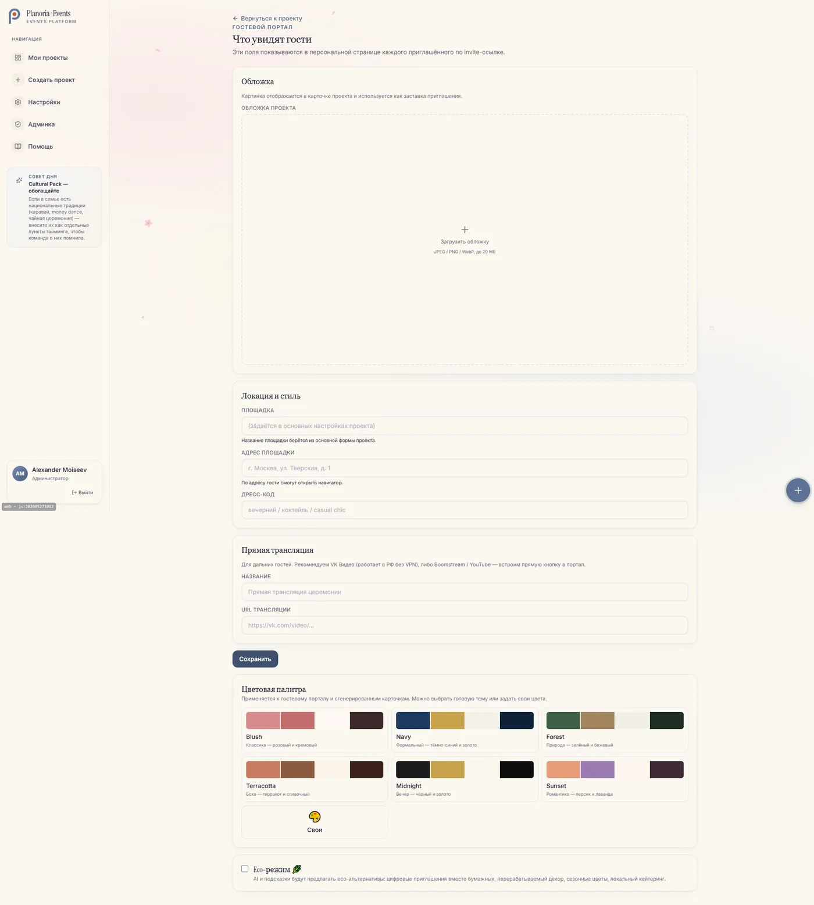
Гостевой портал по личной ссылке — без регистрации: программа, подарки, RSVP в один тап.
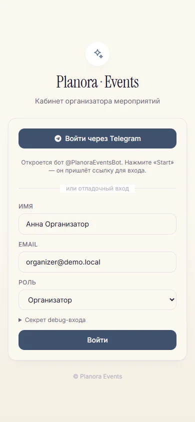
Настоящее мобильное приложение, а не «сайт в webview»
Android на Capacitor 6: биометрический вход, push-уведомления, выбор гостя из контактов телефона, полный офлайн-режим (добавляешь без сети — синхронизируется само) и обновления «по воздуху» мимо Google Play. APK живой, раздаётся по QR.
Почему это было сложно и интересно
- Паритет двух мессенджеров. Telegram и российский MAX — не «ещё одни уведомления», а двустороннее зеркало чата с edit/delete, вложениями, приглашениями и мини-дашбордом на кнопках. Такой паритет двух ботов встречается редко.
- MAX под российскую специфику. Пришлось вшить в контейнер нестандартную TLS-цепочку УЦ Минцифры — без неё падает любой запрос. Это интеграционная зрелость, а не демо-бот.
- AI сделан правильно. RAG на pgvector с graceful-деградацией: ассистент отвечает по данным проекта и не падает, если векторов ещё нет.
- Решения по итогам реальных граблей. OTP вместо magic-link (iOS Mail «протыкивал» ссылку), TTL-лок планировщика вместо утекающего через pgbouncer, Robokassa с фискализацией по 54-ФЗ, RLS-изоляция данных, сквозной 15-блочный аудит безопасности.
Один личный слой поверх всей жизни — наговорил, а система разложила
Заметки, голос, календарь, задачи, привычки, счётчик калорий, AI-чат — обычно всё это в разных приложениях, и ничто не связано. Lielo собирает их в один слой: быстро записал текстом или голосом — а система сама превратит в задачу с напоминанием, привязанную к цели, посчитает КБЖУ по фото и ответит по твоим же данным.
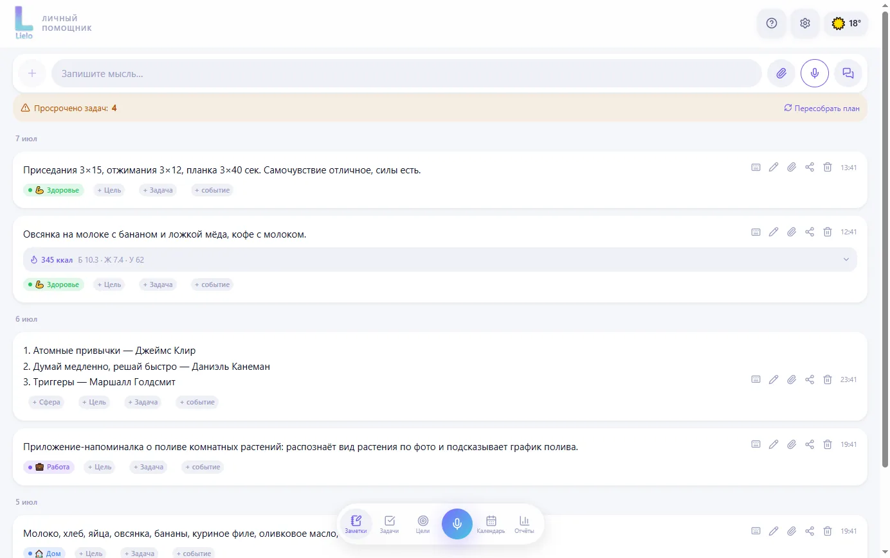
100%-й десктоп-аналог: то же приложение в браузере. Лента дня — заметки о спорте и еде с авто-подсчётом КБЖУ, просроченные задачи, быстрый ввод голосом или текстом. Один аккаунт синхронит телефон и компьютер.
Жизнь размазана по десятку приложений
Заметки в одном, календарь в другом, задачи в третьем, калории в четвёртом, AI-чат отдельно — и ничто не связано. «Захватить мысль» — это трение. Нужен один слой, где достаточно наговорить.
Наговорил — система разложила
Android (Capacitor 6) и 100%-й десктоп-веб на одном коде, backend в РФ. Заметки и голос, свой календарь, цели-привычки, AI-разнос заметки в сущности с самообучением, чат по своим данным, КБЖУ по фото, гео-напоминания, «пульт к ПК».
Меньше приложений — больше порядка
Наговорил мысль — она стала задачей с напоминанием, привязанной к цели; сфотографировал тарелку — получил КБЖУ против нормы; отметил привычку голосом — прогресс дня считается сам. Один аккаунт синхронит телефон и компьютер.
И то же самое — в кармане
Android-приложение с теми же данными: захват мысли голосом, гео-напоминания в фоне, домашний виджет и плитка в шторке для мгновенной записи, биометрический вход, офлайн-режим и обновления «по воздуху».
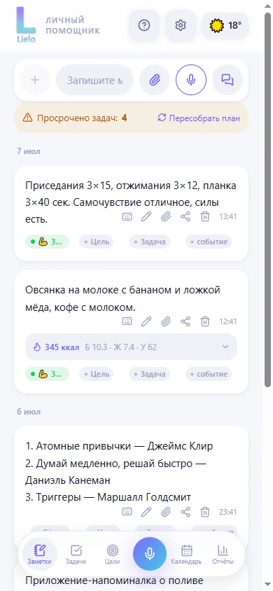
Лента дня: спорт, еда, КБЖУ, быстрый ввод голосом
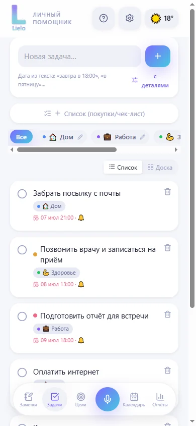
Задачи с приоритетами, сроками и напоминаниями
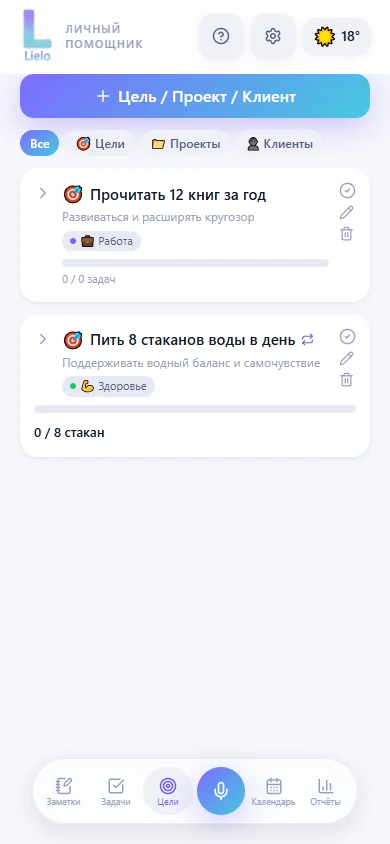
Цели и привычки: «8 стаканов воды» — прогресс дня
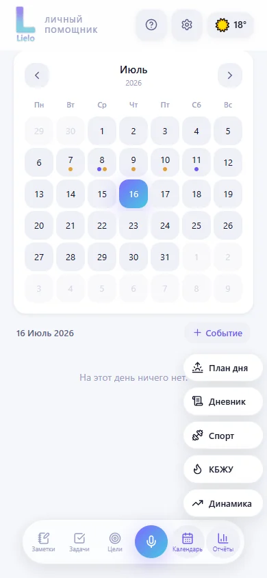
Календарь + отчёты: Дневник, Спорт, КБЖУ, Динамика
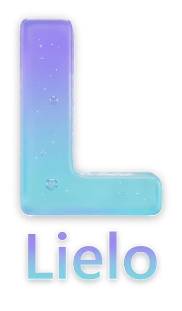
Свой бренд и дизайн-система
Символ «L» из стекла и жидкости, градиент iris→aqua, словесный знак и lockup под светлую и тёмную тему, иконка приложения, splash. Продукт оформлен как завершённый бренд, а не «проект на коленке».
Почему это интересно и сложно
- Широта домена в одном продукте. Заметки, голос, календарь, задачи, привычки, дневник, питание-КБЖУ, гео, AI-чат и агент к ПК — каждый на рынке живёт как отдельное приложение, здесь они связаны в один слой.
- Настоящая мобильная инженерия. 12 нативных Java-классов: гео-напоминания в фоне, домашний виджет, плитка шторки, фоновая запись голоса, биометрия, действия прямо в пуше; локальный бандл + обновления по воздуху.
- AI промышленного уровня. Multi-provider STT и LLM с авто-failover, выбор моделей под тип задачи с BYO-ключом, многоуровневый RAG. Vision по еде и этикеткам с реальной оптимизацией стоимости (5,09 ₽ → 0,58 ₽ за скан).
- Своя КБЖУ-база. ~34 000 продуктов и ~12 200 блюд с микронутриентами из USDA, RU-источников и рецептов — с научным нюансом (удержание витаминов по типу готовки).